BU 校园 · 本轮模型校正
阶段可试玩。形体、窗洞和重复装配已有具体修正；完整实景真实感尚未验收通过。保持原有自然暖色风格。本页为本地检查记录。
修改前 / 本轮版本使用同机位与同光照。固定机位由真实运行时资产加载器生成；下面的游戏截图保留人物与 HUD。实景照片与模型仅近似朝向，季节、相机不同。
Warren：三塔比例、排列与竖向窗带
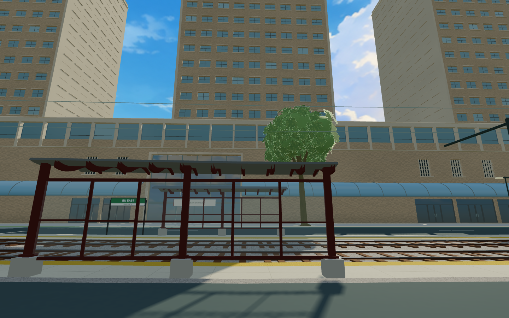
修改前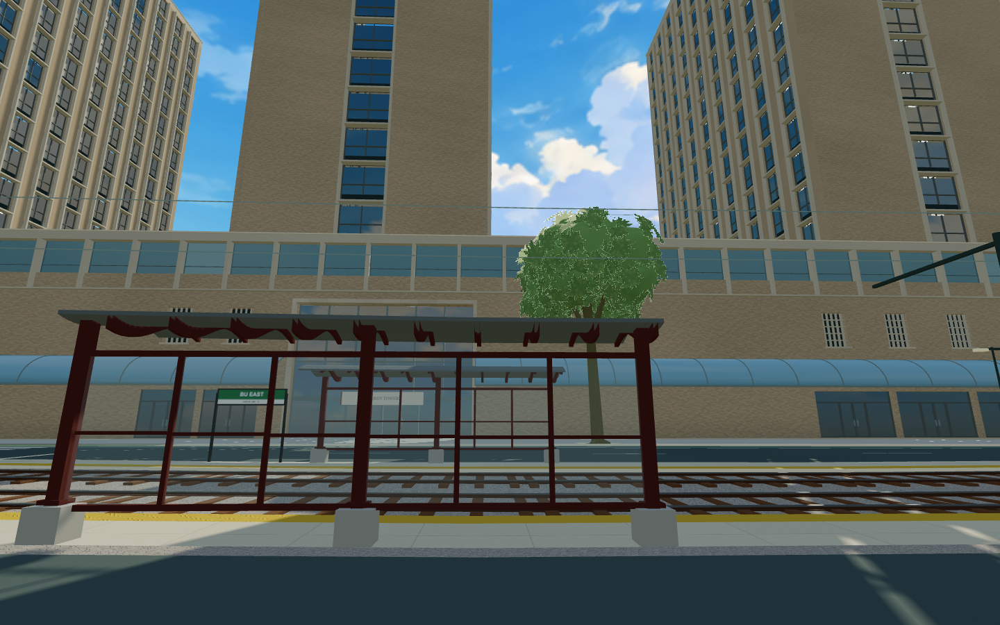
本轮版本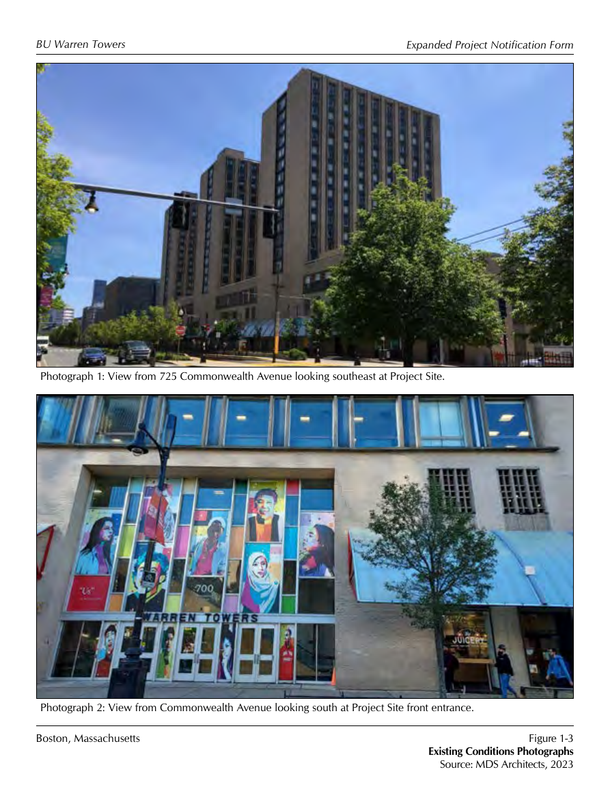
实景参考：BU / MDS，2023现状照片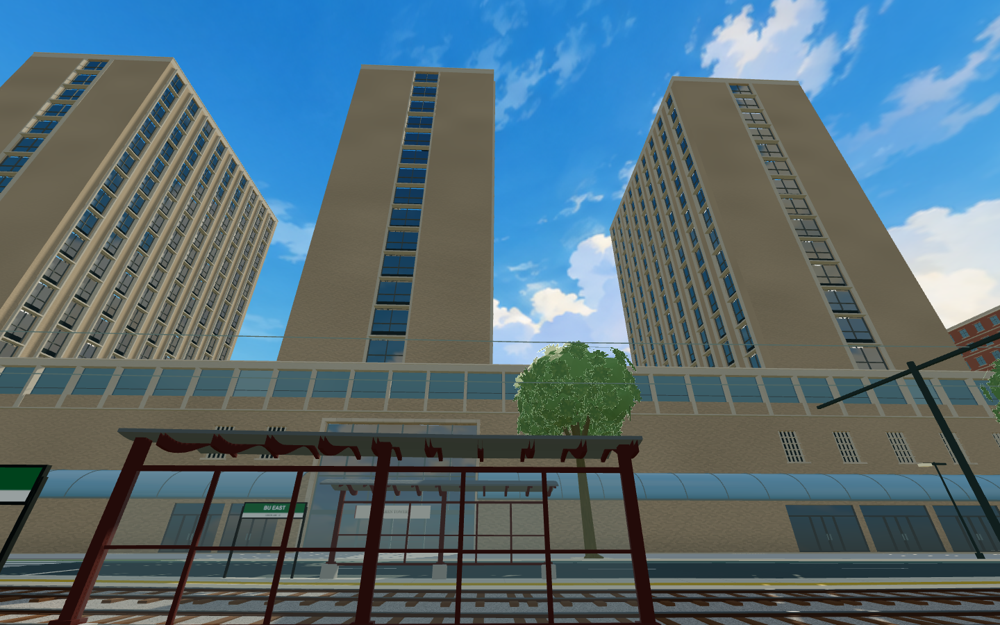
本轮三塔补充街景；街道机位，非照片配准Mugar：南侧上部实墙与深窄窗洞
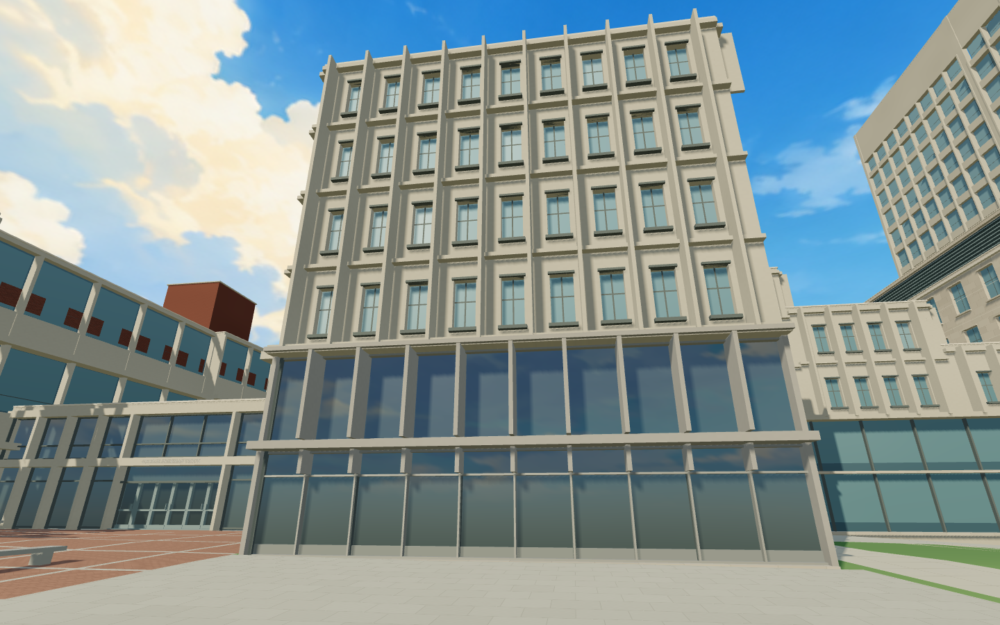
修改前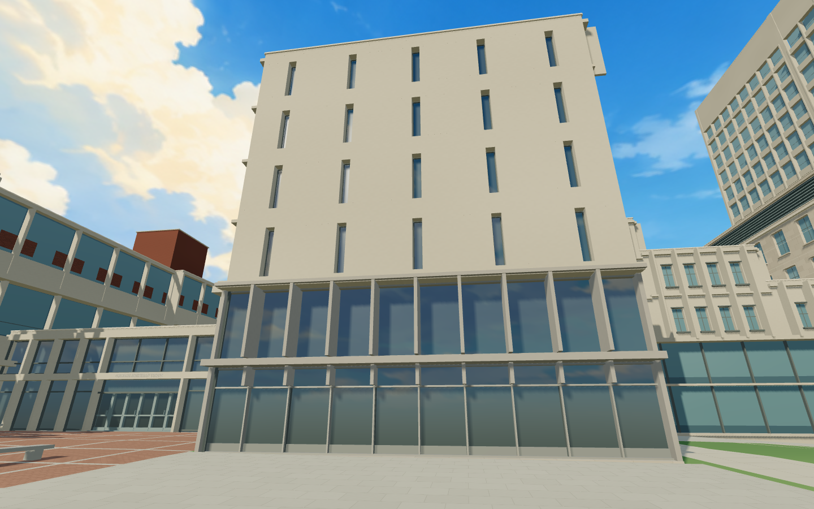
本轮版本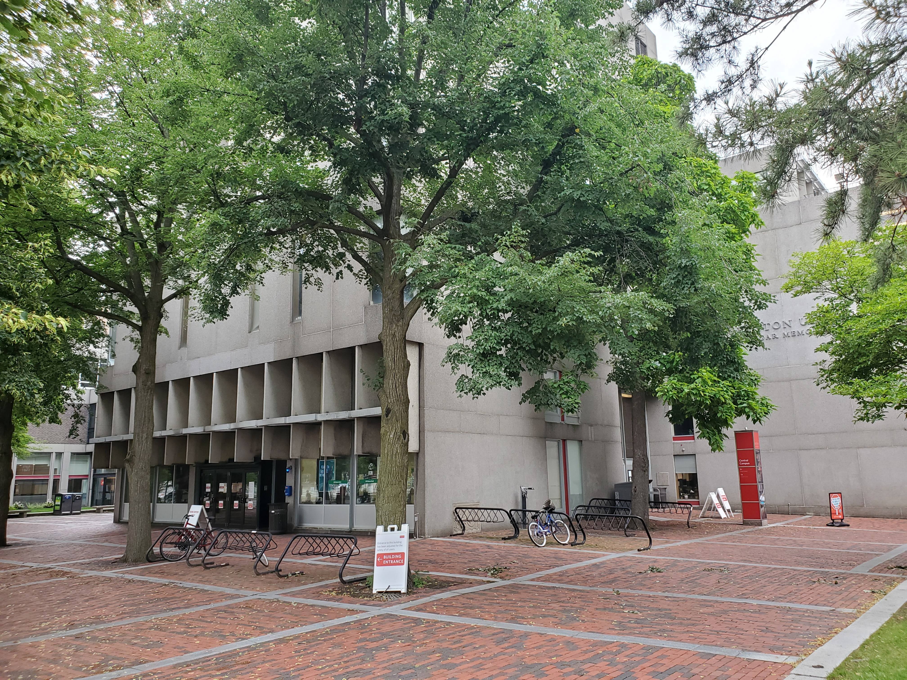
实景参考：Pi.1415926535，2021，CC BY-SA 4.0；树木遮挡部分立面本轮范围仅南侧上部，其他立面仍待重建GSU：Link 侧砖墙与底层窗墙
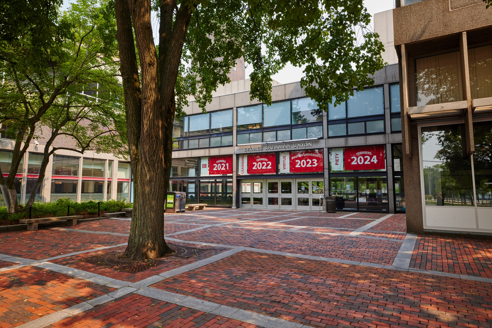
实景参考：BU，2023；未显示顶部完整立面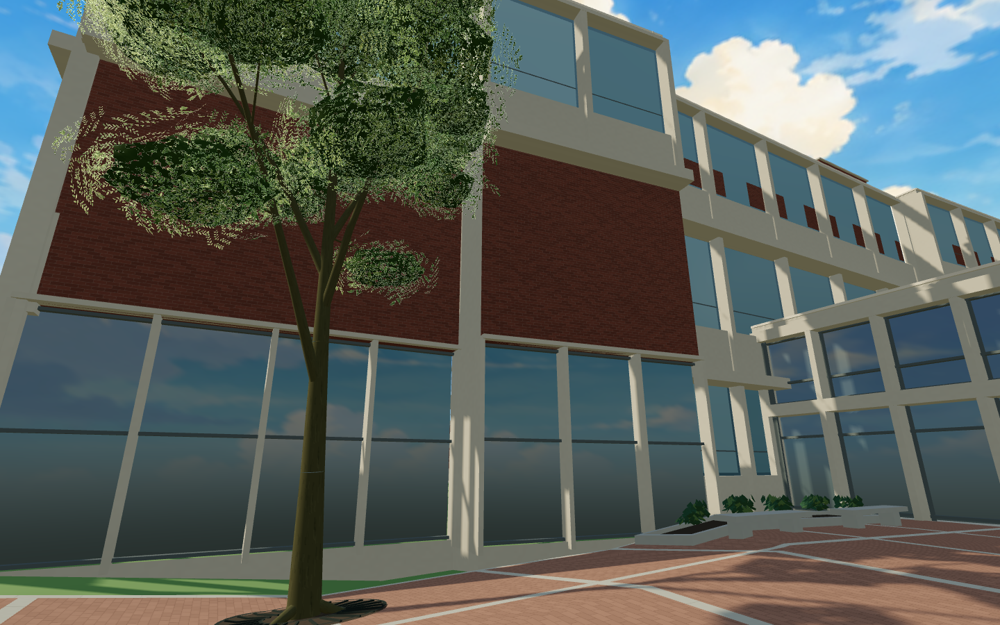
本轮近景：中层砖墙、下层玻璃及框体西校区：拆分重复的餐厅外壳
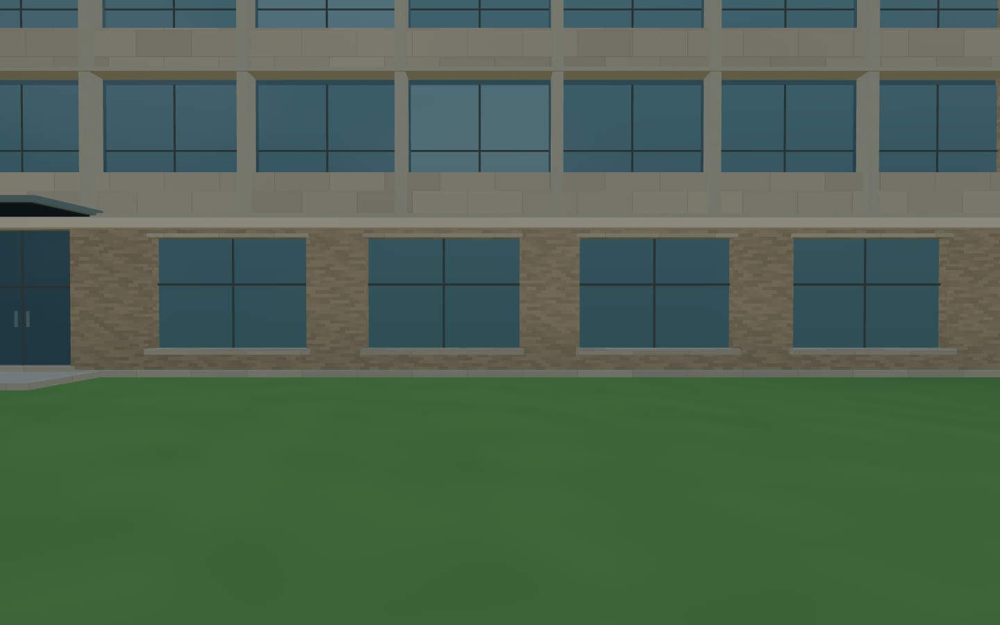
Claflin：原先被餐厅外墙覆盖的窗带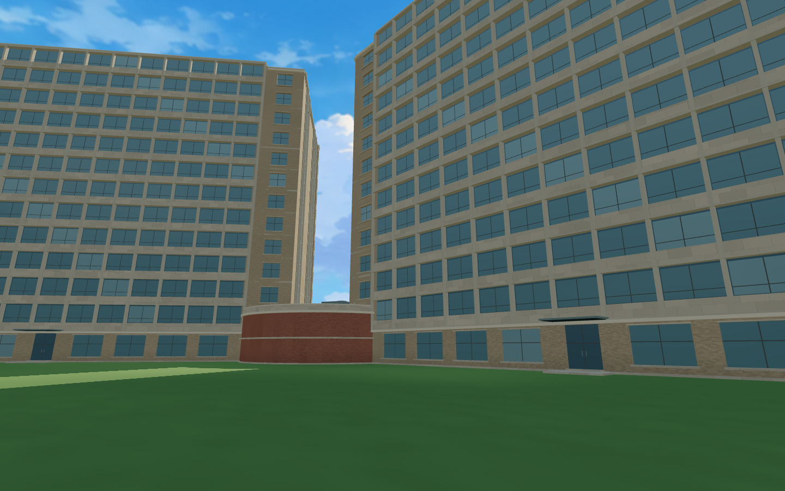
宿舍与低层餐厅：旧通用立面及景观仍待继续精修西区楼板与阴影
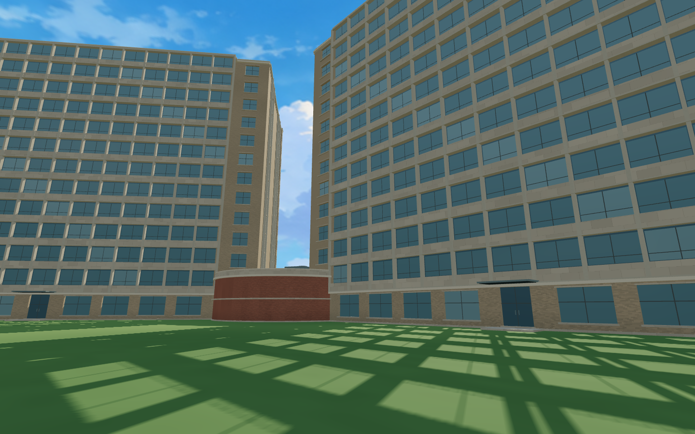
楼板补齐前：阳光贯穿两面窗洞，草地出现整片窗格影；此图已经拆分餐厅本轮版本：补楼层遮挡，同机位与同光照完整游戏中的连续步行
GSU → Mugar → Marsh → Warren → CDS → Questrom。仅起点传送，后续实际步行。手机模拟另检目的地、CDS进出、移动与画质切换；真机待验证。
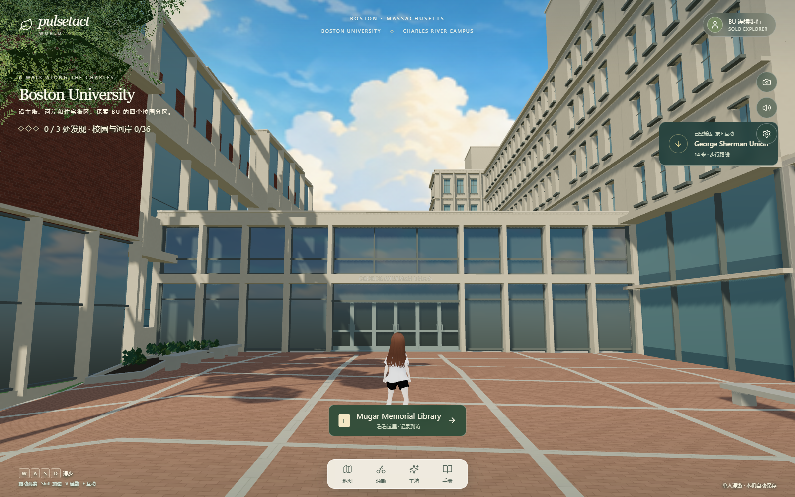
完整游戏：Mugar到访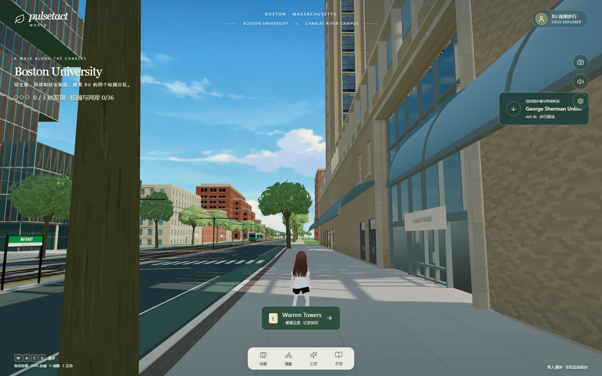
完整游戏：Warren步行近景主要剩余差距：混凝土骨料与玻璃层次、未覆盖立面的专属几何、基座/场地精校和真机性能。技术测试通过不代表真实感达标。
查看来源、构建 hash、分级资源与 G0–G4 记录 · Mugar 图片来源与署名 · CC BY-SA 4.0